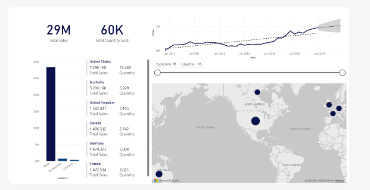

Data Warehouse Design (MS Fabric)
SQL Server ·
MS Fabric ·
Analytics Engineering

Project Overview
Designing analytics-ready data models and warehouses that enable consistent reporting. This project focuses on leveraging SQL Server and Microsoft Fabric to build a scalable data infrastructure.
The Challenge
Organizations often struggle with siloed data and inconsistent metrics. The goal was to create a "Single Source of Truth" using modern Analytics Engineering principles.
Key Contributions
- ETL Pipelines: Orchestrated data movement from source systems to MS Fabric Lakehouse.
- Dimensional Modeling: Designed Star Schemas (Facts & Dimensions) for optimized query performance.
- MS Fabric Integration: Utilized Fabric's unified workspace for end-to-end data processing.
Tools Used
MS Fabric ·
T-SQL ·
Lakehouse ·
Dataflow Gen2